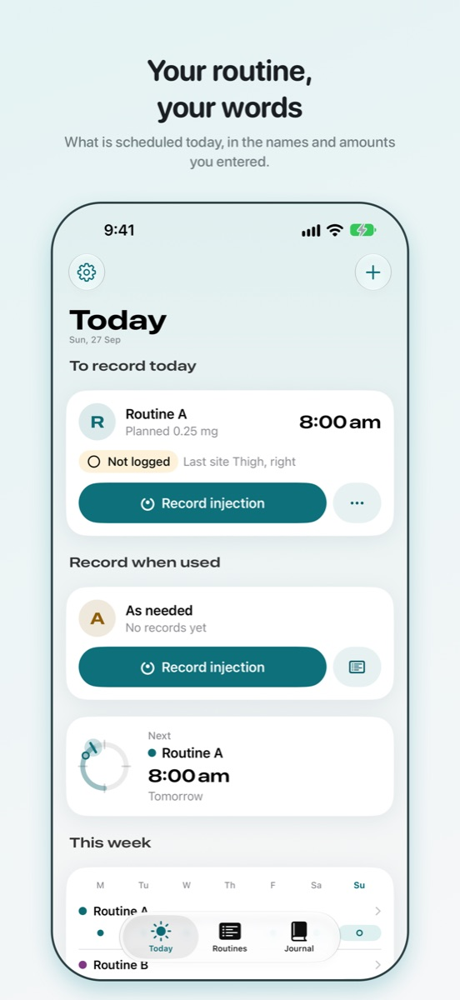
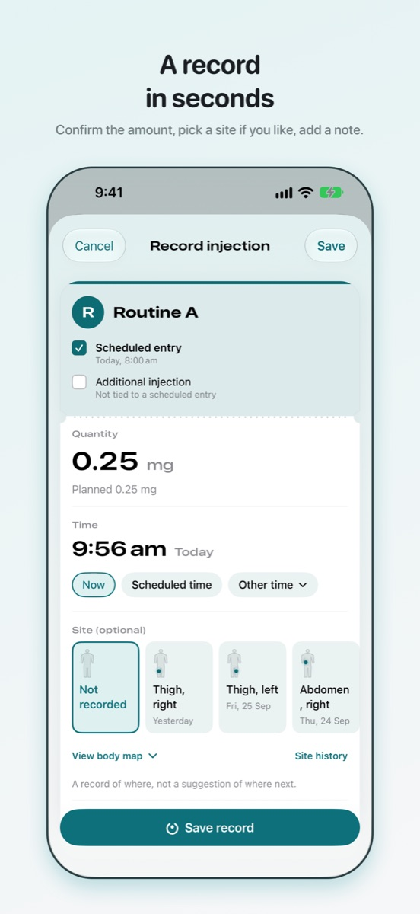
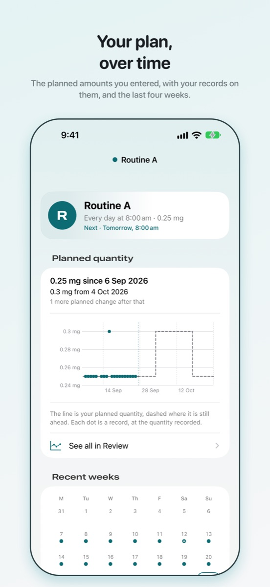

Vialog
Sua rotina de injeções, registrada com suas próprias palavras.
Um diário privado no iPhone para quem já segue uma rotina de injeções: o que você usou, quanto, quando, onde e como se sentiu. Você traz os nomes, as quantidades e a programação. O Vialog guarda o registro.



Um registro pessoal. Este app não recomenda produtos nem mudanças de tratamento. Ele nunca escolhe nada, nem calcula uma dose, nem sugere uma mudança.
O que o Vialog faz
- Guarda suas rotinas. Dê você mesmo o nome de cada uma, defina os horários e a quantidade planejada, nas unidades que você já usa. Nada é consultado, sugerido ou convertido.
- Lembra você. Um lembrete em cada horário programado, entregue pelo iOS no aparelho. Por padrão, ele diz apenas que você tem uma aplicação programada; o nome e a quantidade da rotina só aparecem na Tela Bloqueada se você ativar isso.
- Registra em segundos. Confirme a quantidade, escolha um local se quiser, adicione uma nota. Os locais anteriores continuam visíveis, para você ver por onde já passou.
- Mantém um diário. Check-ins de energia, sono e apetite, sintomas com suas palavras, medições corporais e resultados de exames, em qualquer dia, separados das suas rotinas, a menos que você os vincule.
- Mostra seu histórico. Cada registro por dia, com filtros, e um gráfico do que você registrou ao longo do tempo.
- Conta o que você tem, se você pedir. Informe a quantidade disponível e veja o que ela cobre, descontada pelos seus próprios registros. Ele informa uma contagem e um dia; nunca pede que você obtenha nada.
- Vai com você. Exporte tudo em CSV ou num relatório em PDF (o PDF com o Vialog Pro), faça backup num único arquivo, restaure num celular novo ou apague tudo.
Privado por princípio
Sem conta. Sem login. Sem anúncios, análises ou rastreamento. Seus registros ficam gravados no seu iPhone, aparecem no seu Apple Watch se você usar o app do relógio, e o Vialog não tem servidor para onde enviá-los. O Bloqueio do app, opcional, pede Face ID, Touch ID ou o seu código antes de o app abrir e mostra uma capa em branco no alternador de apps. Leia a política de privacidade (em inglês).
Ajuda
Fale conosco
Perguntas, relatos de bugs e pedidos são todos bem-vindos. Envie um e-mail para csergay@gmail.com e você receberá uma resposta.
Ajuda incluir a versão do iOS, a versão e o build do Vialog, que aparecem nos Ajustes, e o que você estava fazendo quando algo deu errado.
Perguntas frequentes
- Onde ficam meus registros?
- No seu iPhone, no armazenamento do próprio app, protegidos pelo código do aparelho. Se você faz backup do celular no iCloud ou num computador, os dados do app fazem parte desse backup, nos termos da Apple. Nada é guardado em nenhum outro lugar.
- O Vialog me diz o que usar ou quando?
- Não. Ele registra a rotina que você já segue, nas quantidades e nos horários que você informa. Ele nunca escolhe um produto, calcula uma quantidade, sugere um local nem recomenda uma mudança. Se algo na sua rotina tiver que mudar, essa é uma conversa com quem a prescreve.
- O que é gratuito, e o que o Vialog Pro adiciona?
- Registrar, lembretes, o diário, o histórico, os locais, o Bloqueio do app, a exportação CSV, o backup, a restauração e apagar são gratuitos e continuam gratuitos. O Vialog Pro é uma compra única, não uma assinatura, e adiciona quatro coisas: mais de três rotinas ativas, a quantidade disponível, o Resumo (seus registros num eixo de tempo comum, em qualquer período; os últimos 30 dias continuam gratuitos no Diário) e o relatório em PDF. O que você já tem continua funcionando, comprando ou não.
- Comprei o Vialog Pro. Como recupero a compra num celular novo?
- Abra os Ajustes dentro do Vialog, depois Vialog Pro, e toque em Restaurar compras, com a mesma Conta Apple usada na compra. O Compartilhamento Familiar está ativado, então quem compartilha compras com você também recebe. Seus registros são à parte: transfira-os com um arquivo de backup ou por um backup do iPhone.
- Um lembrete não chegou.
- Os lembretes são entregues pelo iOS, e a entrega não é garantida. Verifique se as notificações estão permitidas para o Vialog nos Ajustes do iOS e se um modo de Foco não as está retendo. Ajustes › Verificar lembretes no Vialog mostra quantos lembretes estão registrados e até que data estão cobertos.
- Por que o lembrete não diz qual é a rotina?
- Porque qualquer pessoa que veja o celular pode ler a Tela Bloqueada. O lembrete padrão diz apenas que você tem uma aplicação programada. Se preferir ver ali o nome e a quantidade da rotina, ative Mostrar nome da rotina e quantidade nos Ajustes.
- Posso alterar ou remover um registro?
- Sim. Abra o registro em Hoje ou no Diário para corrigir a quantidade, o horário, o local ou a nota, ou para removê-lo. Uma aplicação programada cujo registro foi removido volta a “Não registrada”. Cada alteração é guardada como uma revisão.
- Por que uma unidade nunca é convertida?
- Porque uma conversão depende de uma concentração que o Vialog não conhece e não deve supor. As quantidades ficam exatamente como você digitou, na unidade que você escolheu, e um registro em outra unidade aparece como tal, sem ser somado aos outros.
- Como apago tudo?
- Ajustes, depois Exportar, backup e apagar, depois Apagar todos os registros. Remover o app também remove tudo o que ele guardou. Não há nada guardado em outro lugar para pedir.